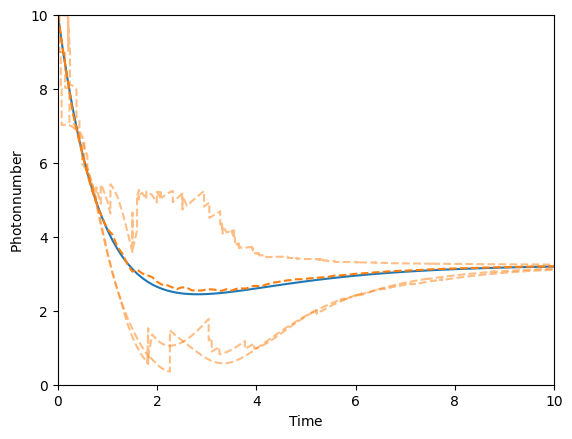

This notebook can be found ongithub
Pumped cavity
using QuantumOptics
using PyPlotDefine parameters
using Random; Random.seed!(0)
η = 0.9 # Pumping strength
κ = 1 # Decay rate
Ncutoff = 20 # Maximum photon number
T = [0:0.1:10;]Create Fock basis and all operators
basis = FockBasis(20)
a = destroy(basis)
at = create(basis)
n = number(basis)
H = η*(a+at)
J = [sqrt(κ)*a]Define initial state
Ψ₀ = fockstate(basis, 10)
ρ₀ = Ψ₀ ⊗ dagger(Ψ₀)Time evolution according to master equation
tout, ρt_master = timeevolution.master(T, ρ₀, H, J)Three different monte carlo trajectories
tout_example1, Ψt_example1 = timeevolution.mcwf(T, Ψ₀, H, J; seed=UInt(1),
display_beforeevent=true,
display_afterevent=true)
tout_example2, Ψt_example2 = timeevolution.mcwf(T, Ψ₀, H, J; seed=UInt(2),
display_beforeevent=true,
display_afterevent=true)
tout_example3, Ψt_example3 = timeevolution.mcwf(T, Ψ₀, H, J; seed=UInt(3),
display_beforeevent=true,
display_afterevent=true)Calculate expectation values $\langle n(t) \rangle$ by averaging single monte carlo trajectory expectation values
Ntrajectories = 50
n_average = zeros(Float64, length(T))
function fout(t::Float64, psi::Ket)
i = findfirst(isequal(t), T)
n_average[i] += real(expect(n, psi)/norm(psi)^2)
end
for i=1:Ntrajectories
timeevolution.mcwf(T, Ψ₀, H, J; fout=fout)
end
n_average /= NtrajectoriesPlot the result $\langle n(t) \rangle$ for the master equation, three different single MCWF trajectories and the average of many MCWF trajectories
plot(T, real(expect(n, ρt_master)))
plot(T, n_average, "--")
plot(tout_example1, real(expect(n, Ψt_example1)), "C1--", alpha=0.5)
plot(tout_example2, real(expect(n, Ψt_example2)), "C1--", alpha=0.5)
plot(tout_example3, real(expect(n, Ψt_example3)), "C1--", alpha=0.5)
xlim(0, 10)
ylim(0, 10)
xlabel(L"\mathrm{Time}")
ylabel(L"\mathrm{Photon number}")